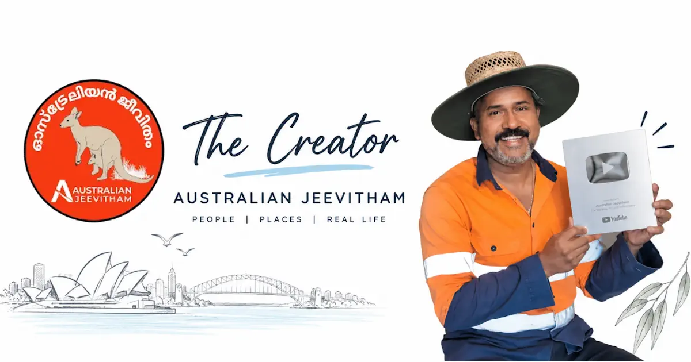
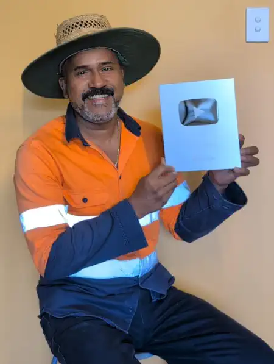

Binu Vadakkedath, the person behind Australian Jeevitham
A Malayali living in Queensland, documenting real Australian life - gardening, jobs, migration, and everyday moments - for the global Malayali community. ഓസ്ട്രേലിയയിലെ ജീവിതം നേരിട്ട് കാണിച്ചു തരുന്ന ഒരു സാധാരണ മലയാളി.

Queensland, Australia - filming everyday life, backyard farming, and regional travel.
- Migration
- Jobs
- Gardening
- Travel
Creator, Australian Jeevitham
I am Binu Vadakkedath, a Malayali living and working in Queensland, Australia. I started the Australian Jeevitham (ഓസ്ട്രേലിയൻ ജീവിതം) channel almost by accident, but I kept going because it gives Malayalis who may never get the chance to visit Australia a real, honest look at life here.
ജോലി, മൈഗ്രേഷൻ തുടങ്ങിയവയുമായി ബന്ധപെട്ടു ഞാൻ തരുന്ന വിവരങ്ങൾ എപ്പോഴും ഓസ്ട്രേലിയയിലെ സർക്കാർ കാലാകാലങ്ങളിൽ പങ്കുവെക്കുന്ന നിയമങ്ങളും ജോലി ഒഴിവുകളും അവരുടെ വെബ്സൈറ്റുകളിൽ നിന്നും എടുത്തു തരുന്നതാണ്. അത്തരം കാര്യങ്ങൾ പങ്കുവയ്ക്കുമ്പോൾ കഴിയുന്നത്ര ഔദ്യോഗിക വിവരങ്ങൾ പരിശോധിക്കുകയും ബന്ധപ്പെട്ട ലിങ്കുകൾ അതോടൊപ്പം നൽകുകയും ചെയ്യുന്നു. ഒരു കാര്യം പറയട്ടെ, ഞാൻ ഒരു മൈഗ്രേഷൻ ഏജന്റോ, ട്രാവൽ ഓപ്പറേറ്ററോ, സർക്കാർ സ്ഥാപനമോ അല്ല. ഓസ്ട്രേലിയയിലേക്കു വരാൻ നോക്കുന്ന മലയാളികൾക്ക് എന്നെകൊണ്ട് പറ്റുന്നപോലെ ചെറിയ സഹായം ചെയ്യുന്നു, അത്രമാത്രം
If you need professional advice regarding visas or legal matters, please contact OMARA-registered migration agent or Australian legal practitioners.
ഞാൻ ഇവിടെ പങ്കുവയ്ക്കുന്ന പല കാര്യങ്ങളും എന്റെ സ്വന്തം അനുഭവങ്ങളിൽ നിന്നുള്ളതാണ്. ജോലി കഴിഞ്ഞുള്ള സമയങ്ങളിൽ ചെയ്തുകൊണ്ടിരിക്കുന്ന വീട്ടുവളപ്പിലെ കൃഷി മുതൽ ഓസ്ട്രേലിയയയിലേക്കു എങ്ങനെയൊക്കെ നിയമപരമായി കടന്നു വരാം എന്നതും അതിൽ ഉൾപ്പെടുന്നു.
— Binu Vadakkedath, Creator of Australian Jeevitham
130,000 subscribers, and counting.
What started almost by accident turned into a community of Malayalis around the world following along with everyday life in Queensland. Along the way, crossing 100,000 subscribers on YouTube earned Australian Jeevitham a Silver Creator Award - and the channel has kept growing since, now past 130,000.
Thank you for watching, sharing, and treating this channel like a window into a life you might one day live yourself.

100K MilestoneTopics I film, guided by first-hand experience
Migration & Settlement
Updates and practical information about Australian migration pathways, with links to official sources where current requirements matter.
Jobs in Australia
Where to look for real and genuine job vacancies across every state and territory.
Regional Travel
Queensland and beyond - the places worth a weekend trip.